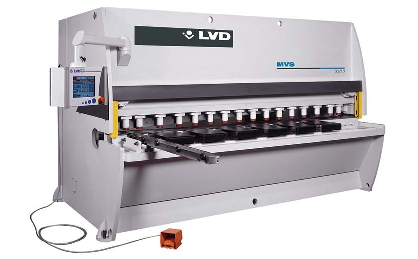

Гильотинные ножницы режут лист по прямой линии и стоят в начале почти любой линии обработки листа. Станок выбирают на годы: слабые ножницы будут работать на пределе и быстро изнашивать ножи, а слишком тяжёлые означают переплату и лишние требования к площадке. Ниже порядок выбора.
1. Начните с материала и толщины
Составьте список материалов и толщин, которые вы будете резать, и найдите самые тяжёлые из них. Паспортная максимальная толщина указывается для стали с определённым пределом прочности (у ножниц LVD это 450 Н/мм²). Нержавеющая сталь прочнее, поэтому максимальная толщина для неё меньше; алюминий мягче и режется легче. Таблицу пересчёта по материалам дают производители, уточняйте её для выбранной модели.
Не берите станок «впритык» к самой толстой детали: запас по мощности снижает нагрузку на раму, гидравлику и ножи.
2. Длина реза
Длина реза должна быть не меньше самого длинного листа, который вы будете резать, с небольшим запасом. У ножниц LVD длина реза бывает от 3100 мм до 12 000 мм. Чем длиннее ножницы, тем они тяжелее и дороже, а масса и габариты определяют требования к фундаменту и цеху. Например, у ножниц MVS масса моделей по данным производителя составляет от 6,5 до 25 тонн.
3. Угол наклона ножа
Верхний нож стоит под небольшим углом к нижнему. От угла зависит усилие и качество реза:
- меньший угол даёт более ровный рез и меньше деформирует деталь, особенно узкие полосы, но требует большего усилия;
- больший угол снижает усилие и позволяет резать более толстый металл на том же станке, но деталь сильнее скручивается и изгибается.
Удобно, когда угол регулируется: так одни и те же ножницы подходят и для тонкого листа, и для толстого. У ножниц LVD минимальный угол составляет 0,5°; у серий CS и HGS наклон ножа регулируется автоматически, у MVS кнопкой на пульте.
4. Зазор между ножами
Оптимальный зазор зависит от материала и толщины. Слишком большой зазор даёт заусенец и неровную кромку, слишком малый ускоряет износ ножей и увеличивает нагрузку. Поэтому важно, как зазор настраивается: вручную маховиком, кнопкой на пульте или автоматически по заданному материалу и толщине. Чем чаще вы меняете материалы, тем полезнее автоматическая настройка.
5. Задний упор
Задний упор позиционирует лист относительно ножа и определяет точность размера заготовки. Проверьте ход упора, способ привода (ручной, моторизованный, с ЧПУ) и наличие цифровой индикации положения. При серийной рубке одинаковых заготовок моторизованный упор с ЧПУ заметно ускоряет работу и снижает число ошибок. Для длинных или тяжёлых листов также полезны передние опоры и лифтеры листа.
6. Прижимы и жёсткость рамы
Прижимы удерживают лист во время реза, от их числа и расположения зависит, насколько лист остаётся на месте. Жёсткая рама и рез-балка уменьшают прогиб при резке и сохраняют ровную кромку по всей длине. Спросите у производителя, как ножницы компенсируют прогиб и может ли гидросистема вести балку параллельно: это увеличивает точность и срок службы ножей.
7. Ножи
Ножи изнашиваются и требуют перешлифовки или замены. Уточните, сколько режущих кромок у ножа и сколько раз его можно переставлять до перешлифовки: у четырёхкромочных ножей ресурс заметно больше. Узнайте стоимость и сроки поставки комплекта ножей: это постоянная статья расходов.
8. Управление
Управление бывает от простой кнопочной панели до сенсорного экрана и ЧПУ. Если вы режете одни и те же детали, ЧПУ с хранением программ экономит время. Если материалы и толщины постоянно меняются, выбирайте станок, который сам подбирает зазор и угол.
9. Безопасность, сервис и площадка
- Защитные ограждения и световые барьеры вокруг зоны реза.
- Сервис в вашей стране: пусконаладка, обучение персонала, запасные части, ножи, гарантийный и постгарантийный ремонт (подробнее о нашем сервисе).
- Площадка: размеры и масса станка, фундамент, электропитание, подъезд для поставки и пространство вокруг для подачи листа.
Серии ножниц LVD
Мы поставляем гидравлические гильотинные ножницы LVD трёх серий. Ориентировочно их можно сравнить так:
| Серия | Для чего | Длина реза | Толщина стали (450 Н/мм²) |
|---|---|---|---|
| MVS | гибкие ножницы для разных задач, кнопочная регулировка хода, зазора и угла | 3100–6200 мм | 6,35 или 13 мм |
| CS | экономичные ножницы для обычных задач, моторизованный задний упор | 3100–4000 мм | 6,35 или 13 мм |
| HGS | тяжёлая рубка, ЧПУ с сенсорным экраном, автоматический расчёт зазора и угла | 3100–12 000 мм | 10–30 мм |
Частые ошибки при выборе
- Берут толщину «впритык» и потом не могут резать нержавеющую сталь.
- Выбирают слишком короткий стол и вынуждены разрезать лист в два захода.
- Не учитывают массу и габариты станка и не готовят фундамент.
- Не считают расходы на ножи и их перешлифовку.
- Покупают станок с ручной настройкой для частой смены материалов и тратят время на каждую наладку.
- Сравнивают ножницы только по цене и забывают про сервис и сроки поставки запчастей.
Что подготовить, чтобы мы подобрали ножницы
- Материалы и толщины, самая толстая и самая длинная заготовка.
- Размеры листов, из которых вы будете резать.
- Объём рубки в смену или в месяц.
- Размеры площадки и сведения об электропитании.
Напишите нам, и мы подберём вариант под вашу задачу. Ножницы LVD описаны на странице «Гильотинные ножницы».
Значения в статье ориентировочные. Точные параметры уточняйте у производителя конкретной модели.